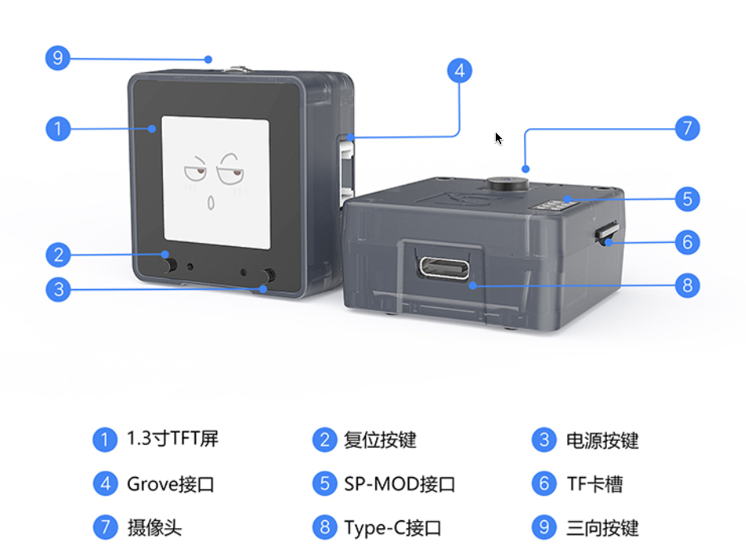
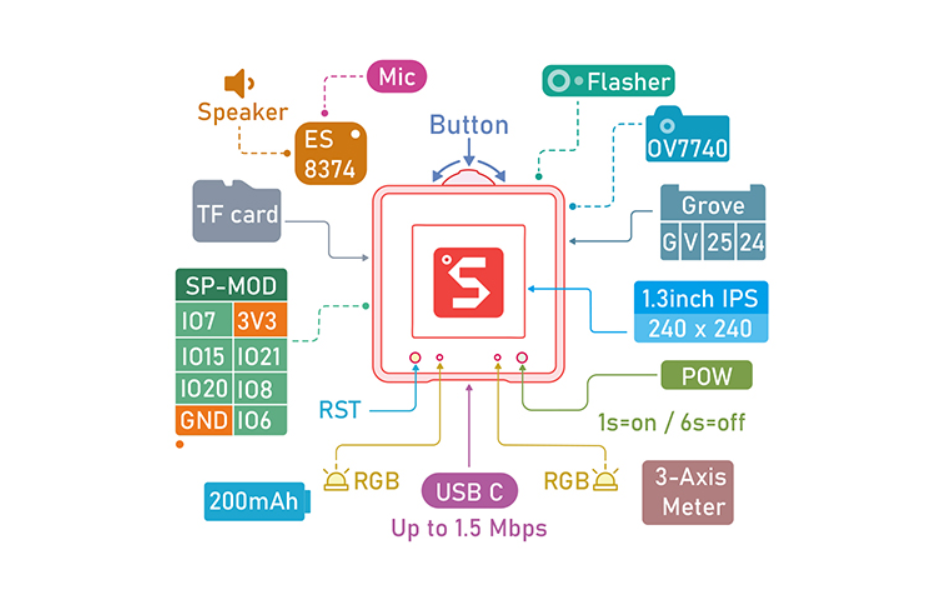

MaixCube
使用教程
概述
SIPEED MaixCube 是基于我们 M1n 模块(主控:Kendryte K210)开发的一款集学习开发和商用一体的人脸识别产品.
MaixCube 集成摄像头、TF卡槽、用户按键、TFT显示屏、锂电池、扬声器麦克、扩展接口等, 用户可使用 Maix Cube 轻松搭建一款人脸识别门禁系统, 同时还预留开发调试接口, 也能将其作为一款功能强大的 AI 学习开发板.
MaixCube 外观及功能介绍
外观一览

板载功能介绍
- 电源管理控制单元: AXP173
- 板载 200mAh 锂电池,支持用户充放电控制
- 音频驱动 IC: ES8374
- 支持音频录制,播放
- 三轴加速度传感器: MSA301
- Camera OV7740:
- 1.3 IPS LCD:
- RGB: 板载两颗 RGB LED
- USB Type-C:Type-C 接口,正反盲插
板载扩展接口
Maix Cube 对用户开放了两个高度扩展的接口: SP-MOD 与 Grove 接口,
用户可以很方便的进行 DIY
SP-MOD 接口
SP-MOD 即为 sipeed module, simplify PMOD, super module
| 接口 | 接口描述 |
|---|---|
| SP-MODE 接口描述 |  |
| 硬件接口 |  |
Grove 接口
- Grove 模块接口
Grove 接口的线缆有 4 种颜色, 用户可以根据颜色快速区别

| --- | 颜色 | 描述 |
|---|---|---|
| pin 1 | 黄色 | (例如, I2C Grove Connectors上的SCL) |
| pin 2 | 白色 | (例如, I2C Grove Connectors上的SDA) |
| pin 3 | 红色 | VCC (所有的Grove接口红色都是VCC) |
| pin 4 | 黑色 | GND (所有的Grove接口红色都是GND) |
Grove模块主要有 4 种接口:
Grove Digital 数字接口:
Grove 数字接口由 Grove 插头的四条标准线组成.
两条信号线通常称为 D0 和 D1 .
大多数模块只使用 D0, 但有些(像LED Bar Grove显示屏)使用两者.通常核心板会将板卡上的第一个Grove连接头称为 D0, 第二个称为 D1.第一个接头会连接到主控芯片的 DO/D1 管脚, 第二个连接头会连接到主控芯片的D1/D2引脚, 后面的连接头以此类推.pin Function Note pin1 Dn 第一个数字输入 pin2 Dn+1 第二个数字输入 pin3 VCC 供电引脚 5V/3.3V pin4 GND 地 Grove Analog 模拟接口
Grove模拟接口由Grove插头的四条标准线组成.
两条信号线通常称为A0和A1.
大多数模块只使用A0，但有些（像LED Bar Grove显示屏）使用两者.
通常核心板会将板卡上的第一个Grove连接头称为A0，第二个称为A1。第一个接头会连接到主控芯片的AO/A1管脚，第二个连接头会连接到主控芯片的A1/A2引脚，后面的连接头以此类推.pin Function Note pin1 An 第一个模拟输入 pin2 An+1 第二个模拟输入 pin3 VCC 供电引脚 5V/3.3V pin4 GND 地 Grove UART :
The Grove UART 是特殊的一种数字输入输出接口
它使用引脚 1 和引脚 2 进行串行输入和发送
引脚1是 RX 线(用于接收数据, 因此是输入)
其中引脚 2 是 TX 线(用于向 Grove 模块传输数据)pin Function Note pin1 RX 串行接收 pin2 TX 串行发送 pin3 VCC 供电引脚 5V/3.3V pin4 GND 地 Grove I2C:
有许多类型的 I2C Grove 传感器可用.MaixAmigo 上的 Grove 只支持 3.3V 传感器Grove I2C 连接器具有标准布局.引脚 1 是SCL信号, 引脚 2 是SDA信号
pin Function Note pin1 SCL I2C 时钟 pin2 SDA I2C 数据 pin3 VCC 供电引脚, 5V/3.3V pin4 GND 地
板载 I2C 设备
MaixCube 板载 I2C 传感器/IC
| IC | 设备 id | I2C 地址(7位地址) |
|---|---|---|
| ES8374 | 0x08 | 0x10 |
| MSA301 | 0x13 | 0x26 |
| AXP173 | 0x68 | 0x34 |
MaixCube参数

| K210 芯片基本参数 | |
|---|---|
| 内核 | RISC-V Dual Core 64bit, with FPU |
| 主频 | 400MHz （可超频至500MHz） |
| SRAM | 内置8M Byte |
| 摄像头帧率 | OV7740/QVGA@60fps/VGA@30fps |
| 语音识别 | 离线语音识别，声场 |
| 网络模型 | |
| 深度学习框架 | 支持TensorFlow \ Keras \ Darknet \ Caffe 等主流框架 |
| 外设 | FPIOA、 UART、 GPIO、 SPI、 I2C、I2S、 TIMER |
| 硬件加速单元 | |
| 开发板参数 | 板载资源 |
|---|---|
| 板载接口 | |
| 尺寸 | 40*40*18.6mm |
| 供电电压 | USB-type或内部锂电池（200mAh） |
| 软件开发 | |
|---|---|
| 软件环境 | MaixPy（microPython） |
| 开发环境 | MaixPy IDE、PlatformlO IDE、Arduino IDE等 |
| 编程语言 | C，MicroPython |
相关资料下载
Sipeed-Maix-Cube 资料下载：Sipeed-Maix-Cube
Sipeed-Maix-Cube 规格书下载：Sipeed-Maix-Cube
Sipeed-Maix-Cube 原理图下载：Sipeed-Maix-Cube